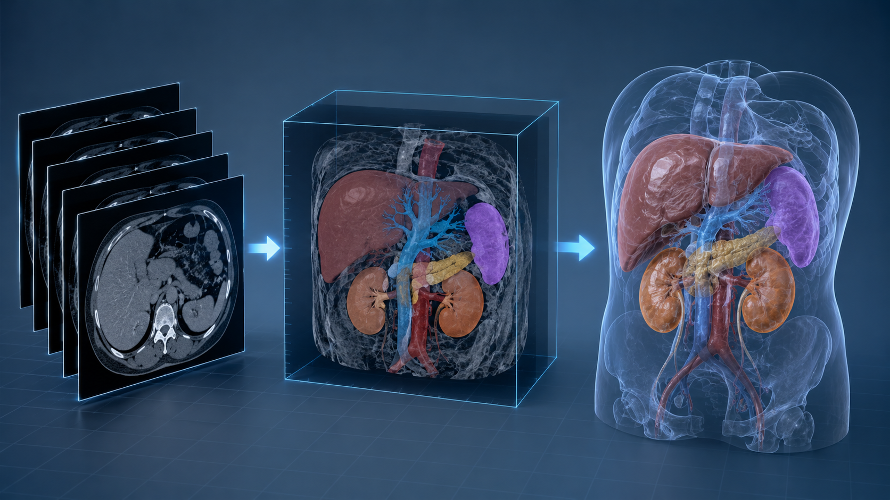
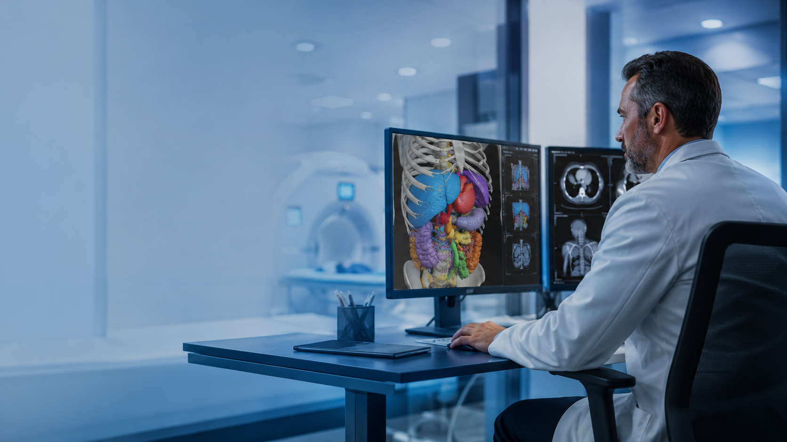

DICOM Intake
Load CT/MRI series, verify orientation, organize slice data, and prepare cases for review.
Clinical AI • 3D Slicer • Medical Imaging QA
Family medicine physician with a clinical foundation in evidence-based decision-making, documentation, care coordination, and medically grounded review of imaging and model outputs.
3D Slicer Expertise
Built to show evaluator-ready knowledge of how 2D CT/MRI slices become clinically meaningful segmentation, visualization, measurement, and documentation outputs.
Load CT/MRI series, verify orientation, organize slice data, and prepare cases for review.
Use thresholding, grow-from-seeds, scissors, smoothing, and manual correction logic.
Create volume/surface views that connect anatomy, lesion location, and clinical context.
Review ROI labels, volume/length measurements, laterality, and anatomical plausibility.
Prepare screenshots, model outputs, reproducible workflow notes, and concise quality logs.
Evaluate generated explanations, masks, labels, and imaging summaries for safety and accuracy.

Workflow Narrative
The portfolio is organized around de-identified or synthetic/demo imaging examples: input modality, segmentation strategy, quality checks, final visualization, and medical relevance.
3D Slicer Work Samples

Demonstrates DICOM import, anatomy/ROI segmentation, 3D reconstruction, screenshot capture, and a concise QA checklist.
Shows how model-generated masks, anatomical labels, and explanations would be checked for clinical plausibility and safety.
Clinical Foundation
Board-certified Family Medicine physician with broad clinical experience across primary care, hospital-based workflows, preventive medicine, chronic disease management, acute care evaluation, and clinical documentation.
Verification Links
Application note: use only verified, truthful years of 3D Slicer experience on forms. This website is structured to demonstrate portfolio evidence and workflow readiness.
Contact: jamiemathews1891@outlook.com
Download Portfolio Deck